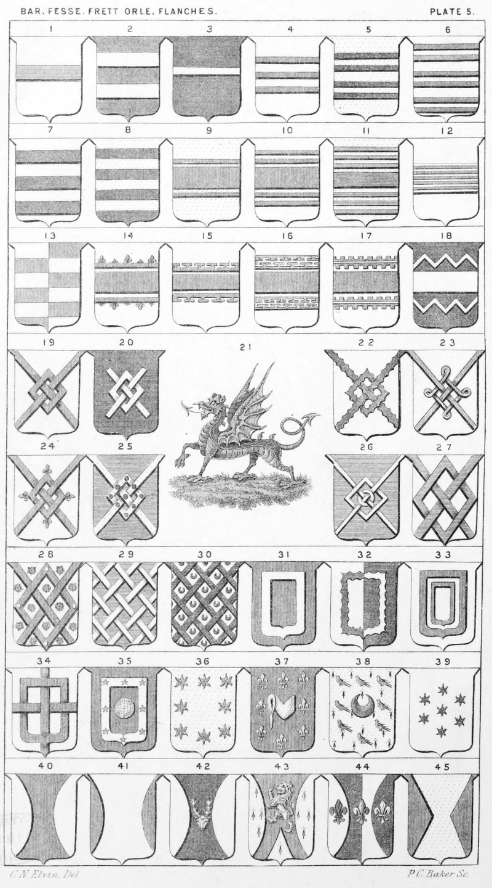

Plate 5.

Plate 5.
- Bar. Ar. a Bar az.
- Two Bars. Sa. two bars ar. arms of Brereton
- Barrulet
- Three Closets
- Two Bars gemels
- Three Bars gemels
- Three Bars
- Barry of eight
- A Fesse cottised
- A Fesse double cottised
- Fesse treble cottised
- Fesse charged with five music bars
- Barry of six per-pale countercharged
- Fesse betw. two cottises fleury
- Fesse cottised potentee
- Fesse double cottised potent, counter-potent
- Fesse betw. two bars geraelle, embattled
- Fesse cottised-dancettee
- A Fret
- Fret couped
- The Badge of Wales. A Dragon pass., wings elevated endorsed gu. upon a mount vert.
- Fret engrailed. (For Triangular Frets see P. 42. f. 38.)
- Fesse fretted, or double fretted
- Fesse fleury at each point
- Fesse charged on each point with a pellet
- Fesse interlaced with an annulet
- Fesse throughout
- Ar. on a Fret throughout gu. a rose in every interstice of the second, barbed vert., four hearts of the first. Gardiner
- Fretty
- Ar. Fretty sa. and semee of crescents of the second, or Ar. fretty sa. in each interstice a crescent of the last
- An Orle
- Per-Pale ar. and sa. an orle engrailed on both sides countercharged
- A Double Orle, or an Orle of two pieces. (For Orle of three pieces see P. 22, f. 25)
- An Orle fretted with a pallet and barrulet
- Gu. within an Orle ar. charged with eight mullets az. an armillary sphere or. Chamberlain
- An Orle of eight estoiles. See Orle in Dictionary
- Az. a Manche, or Maunch within an Orle of Fleur-de-lis or.
- Erminois a crescent sa. within an Orle of Matlets gu. Roskell
- Seven estoiles, or stars in orbicular form
- Two Flasques, or Flanches
- Two Voiders
- Sa. a Stag's head cabosed betw. two Flanches ar. Parker
- Gu. a lion ramp, or betw. two flanches erm. and a point in point of the last
- Per-Pale sa. and ar. a Fleur-de-lis betw. two flanches, each charged with a Fleur-de-lis, all counter-charged. Also blazoned Per-Pale sa. and ar. two flanches and three Fleur-de-lis in fesse all countercharged. Robyns and White
- Two square Flanches